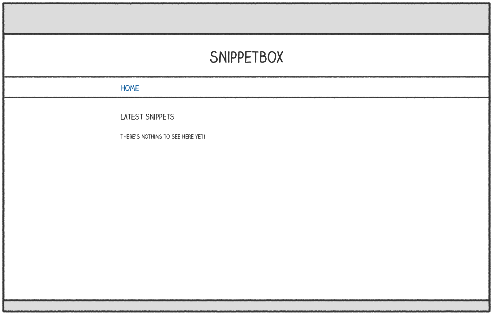

HTML templating and inheritance
Let’s inject a bit of life into the project and develop a proper home page for our Snippetbox web application. Over the next couple of chapters we’ll work towards creating a page which looks like this:
프로젝트에 활기를 불어넣고 Snippetbox 웹 애플리케이션을 위한 적절한 홈페이지를 개발해 보겠습니다. 다음 몇 장 동안 이렇게 보이는 페이지를 만들어 나갈 것입니다.

Let’s start by creating a template file at ui/html/pages/home.tmpl to contain the HTML content for the home page. Like so:
우선 ui/html/pages/home.tmpl 파일을 생성하여 홈 페이지의 HTML 콘텐츠를 담을 것입니다. 다음과 같이 작성하겠습니다.
$ mkdir ui/html/pages $ touch ui/html/pages/home.tmpl
And add the following HTML markup:
그리고 다음 HTML 마크업을 추가하십시오:
<!doctype html> <html lang='en'> <head> <meta charset='utf-8'> <title>Home - Snippetbox</title> </head> <body> <header> <h1><a href='/'>Snippetbox</a></h1> </header> <main> <h2>Latest Snippets</h2> <p>There's nothing to see here yet!</p> </main> <footer>Powered by <a href='https://golang.org/'>Go</a></footer> </body> </html>
Now that we’ve created a template file containing the HTML markup for the home page, the next question is how do we get our home handler to render it?
이제 홈 페이지의 HTML 마크업을 담은 템플릿 파일을 생성했으니, 다음 질문은 home 핸들러를 어떻게 만들어서 렌더링할 것인가입니다?
For this we need to use Go’s html/template package, which provides a family of functions for safely parsing and rendering HTML templates. We can use the functions in this package to parse the template file and then execute the template.
이를 위해 Go의 html/template 패키지를 사용해야 합니다. 이 패키지는 HTML 템플릿을 안전하게 구문 분석하고 렌더링하는 데 사용되는 함수 집합을 제공합니다. 이 패키지의 함수들을 사용하여 템플릿 파일을 구문 분석하고 템플릿을 실행할 수 있습니다.
I’ll demonstrate. Open the cmd/web/handlers.go file and add the following code:
이를 실제로 보여드리겠습니다. cmd/web/handlers.go 파일을 열고 다음 코드를 추가하세요.
package main import ( "fmt" "html/template" // New import "log" // New import "net/http" "strconv" ) func home(w http.ResponseWriter, r *http.Request) { if r.URL.Path != "/" { http.NotFound(w, r) return } // Use the template.ParseFiles() function to read the template file into a // template set. If there's an error, we log the detailed error message and use // the http.Error() function to send a generic 500 Internal Server Error // response to the user. Note that we use the net/http constant // http.StatusInternalServerError here instead of the integer 500 directly. ts, err := template.ParseFiles("./ui/html/pages/home.tmpl") if err != nil { log.Print(err.Error()) http.Error(w, "Internal Server Error", http.StatusInternalServerError) return } // Then we use the Execute() method on the template set to write the // template content as the response body. The last parameter to Execute() // represents any dynamic data that we want to pass in, which for now we'll // leave as nil. err = ts.Execute(w, nil) if err != nil { log.Print(err.Error()) http.Error(w, "Internal Server Error", http.StatusInternalServerError) } } ...
It’s important to point out that the file path that you pass to the template.ParseFiles() function must either be relative to your current working directory, or an absolute path. In the code above I’ve made the path relative to the root of the project directory.
template.ParseFiles() 함수에 전달하는 파일 경로는 현재 작업 디렉토리를 기준으로 상대 경로이거나 절대 경로이어야 합니다. 위의 코드에서는 경로를 프로젝트 디렉토리의 루트를 기준으로 상대 경로로 지정했습니다.
So, with that said, make sure you’re in the root of your project directory and restart the application:
그렇다면 말씀드린대로 프로젝트 디렉토리의 루트에 있는지 확인하고 애플리케이션을 다시 시작하세요:
$ cd $HOME/code/snippetbox $ go run ./cmd/web 2023/09/05 09:32:39 starting server on :4000
Then open http://localhost:4000 in your web browser. You should find that the HTML homepage is shaping up nicely.
그런 다음 웹 브라우저에서 http://localhost:4000을 열어보세요. HTML 홈페이지가 잘 구성되고 있는 것을 확인할 수 있을 것입니다.

Template composition
As we add more pages to our web application, there will be some shared, boilerplate, HTML markup that we want to include on every page — like the header, navigation and metadata inside the <head> HTML element.
웹 애플리케이션에 더 많은 페이지를 추가할수록 모든 페이지에 포함하고 싶은 일부 공통된 보일러플레이트 HTML 마크업이 있을 것입니다. 이는 헤더, 내비게이션 및 <head> HTML 요소 내의 메타데이터와 같은 것입니다.
To prevent duplication and save typing, it’s a good idea to create a base (or master) template which contains this shared content, which we can then compose with the page-specific markup for the individual pages.
중복을 방지하고 타이핑을 절약하기 위해 이러한 공유 콘텐츠를 포함하는 기본(또는 마스터) 템플릿을 만드는 것은 좋은 아이디어입니다. 그런 다음 각 페이지에 대한 페이지별 마크업과 결합할 수 있습니다.
Go ahead and create a new ui/html/base.tmpl file…
계속해서 새로운 ui/html/base.tmpl 파일을 만들어 주세요…
$ touch ui/html/base.tmpl
And add the following markup (which we want to appear in every page):
그리고 다음 마크업을 추가하세요(이것은 모든 페이지에 나타나길 원하는 부분입니다):
{{define "base"}}
<!doctype html>
<html lang='en'>
<head>
<meta charset='utf-8'>
<title>{{template "title" .}} - Snippetbox</title>
</head>
<body>
<header>
<h1><a href='/'>Snippetbox</a></h1>
</header>
<main>
{{template "main" .}}
</main>
<footer>Powered by <a href='https://golang.org/'>Go</a></footer>
</body>
</html>
{{end}}
Hopefully this feels familiar if you’ve used templating in other languages before. It’s essentially just regular HTML with some extra actions in double curly braces.
이전에 다른 언어에서 템플릿을 사용한 적이 있다면 이것은 익숙하게 느껴질 것입니다. 이것은 본질적으로 일반 HTML에 이중 중괄호 내의 몇 가지 추가적인 액션만 추가된 것입니다.
We use the {{define "base"}}...{{end}} action as a wrapper to define a distinct named template called base, which contains the content we want to appear on every page.
{{define "base"}}...{{end}} 액션은 base라는 명명된 템플릿을 정의하는 래퍼로 사용되며, 이 템플릿에는 각 페이지에 나타나길 원하는 콘텐츠가 포함되어 있습니다.
Inside this we use the {{template "title" .}} and {{template "main" .}} actions to denote that we want to invoke other named templates (called title and main) at a particular location in the HTML.
내부에서는 {{template "title" .}} 및 {{template "main" .}} 액션을 사용하여 HTML의 특정 위치에서 다른 명명된 템플릿(title 및 main 이라는)을 호출하고자 함을 나타냅니다.
Now let’s go back to the ui/html/pages/home.tmpl file and update it to define title and main named templates containing the specific content for the home page.
이제 ui/html/pages/home.tmpl 파일로 돌아가서 홈 페이지의 특정 콘텐츠를 포함하는 title 및 main 이라는 명명된 템플릿을 정의하도록 업데이트해 보겠습니다.
{{define "title"}}Home{{end}}
{{define "main"}}
<h2>Latest Snippets</h2>
<p>There's nothing to see here yet!</p>
{{end}}
Once that’s done, the next step is to update the code in your home handler so that it parses both template files, like so:
이 작업이 완료되면 home 핸들러의 코드를 업데이트하여 두 템플릿 파일을 모두 구문 분석하도록 다음과 같이 수행하세요:
package main ... func home(w http.ResponseWriter, r *http.Request) { if r.URL.Path != "/" { http.NotFound(w, r) return } // Initialize a slice containing the paths to the two files. It's important // to note that the file containing our base template must be the *first* // file in the slice. files := []string{ "./ui/html/base.tmpl", "./ui/html/pages/home.tmpl", } // Use the template.ParseFiles() function to read the files and store the // templates in a template set. Notice that we use ... to pass the contents // of the files slice as variadic arguments. ts, err := template.ParseFiles(files...) if err != nil { log.Print(err.Error()) http.Error(w, "Internal Server Error", http.StatusInternalServerError) return } // Use the ExecuteTemplate() method to write the content of the "base" // template as the response body. err = ts.ExecuteTemplate(w, "base", nil) if err != nil { log.Print(err.Error()) http.Error(w, "Internal Server Error", http.StatusInternalServerError) } } ...
So now, instead of containing HTML directly, our template set contains 3 named templates — base, title and main. We use the ExecuteTemplate() method to tell Go that we specifically want to respond using the content of the base template (which in turn invokes our title and main templates).
이제 HTML을 직접 포함하는 대신 템플릿 세트에는 base, title 및 main 이라는 3개의 명명된 템플릿이 포함되어 있습니다. ExecuteTemplate() 메서드를 사용하여 Go에게 특히 base 템플릿의 내용을 사용하여 응답하도록 지시합니다(이는 결국 title 및 main 템플릿을 호출합니다).
Feel free to restart the server and give this a try. You should find that it renders the same output as before (although there will be some extra whitespace in the HTML source where the actions are).
서버를 다시 시작하고 시도해보세요. 이전과 동일한 출력이 렌더링되는 것을 확인할 수 있을 것입니다(액션이 있는 곳에는 몇 가지 추가 공백이 있을 수 있습니다).
Embedding partials
For some applications you might want to break out certain bits of HTML into partials that can be reused in different pages or layouts. To illustrate, let’s create a partial containing the primary navigation bar for our web application.
일부 애플리케이션에서는 다른 페이지나 레이아웃에서 재사용할 수 있는 HTML 일부를 부분적으로 분리하고 싶을 수 있습니다. 예를 들어 웹 애플리케이션의 기본 내비게이션 바를 포함하는 부분을 만들어보겠습니다.
Create a new ui/html/partials/nav.tmpl file containing a named template called "nav", like so:
새로운 ui/html/partials/nav.tmpl 파일을 만들어 "nav" 라는 명명된 템플릿을 포함하도록 하세요:
$ mkdir ui/html/partials $ touch ui/html/partials/nav.tmpl
{{define "nav"}}
<nav>
<a href='/'>Home</a>
</nav>
{{end}}
Then update the base template so that it invokes the navigation partial using the {{template "nav" .}} action:
그런 다음 base 템플릿을 업데이트하여 {{template "nav" .}} 액션을 사용하여 내비게이션 부분을 호출하도록 하세요:
{{define "base"}}
<!doctype html>
<html lang='en'>
<head>
<meta charset='utf-8'>
<title>{{template "title" .}} - Snippetbox</title>
</head>
<body>
<header>
<h1><a href='/'>Snippetbox</a></h1>
</header>
<!-- Invoke the navigation template -->
{{template "nav" .}}
<main>
{{template "main" .}}
</main>
<footer>Powered by <a href='https://golang.org/'>Go</a></footer>
</body>
</html>
{{end}}
Finally, we need to update the home handler to include the new ui/html/partials/nav.tmpl file when parsing the template files:
마지막으로 템플릿 파일을 구문 분석할 때 새로운 ui/html/partials/nav.tmpl 파일을 포함하도록 home 핸들러를 업데이트해야 합니다:
package main ... func home(w http.ResponseWriter, r *http.Request) { if r.URL.Path != "/" { http.NotFound(w, r) return } // Include the navigation partial in the template files. files := []string{ "./ui/html/base.tmpl", "./ui/html/partials/nav.tmpl", "./ui/html/pages/home.tmpl", } ts, err := template.ParseFiles(files...) if err != nil { log.Print(err.Error()) http.Error(w, "Internal Server Error", http.StatusInternalServerError) return } err = ts.ExecuteTemplate(w, "base", nil) if err != nil { log.Print(err.Error()) http.Error(w, "Internal Server Error", http.StatusInternalServerError) } } ...
Once you restart the server, the base template should now invoke the nav template and your home page should look like this:
서버를 다시 시작하면 base 템플릿이 이제 nav 템플릿을 호출하고 홈 페이지는 다음과 같이 보일 것입니다:

Additional information
The block action
In the code above we’ve used the {{template}} action to invoke one template from another. But Go also provides a {{block}}...{{end}} action which you can use instead. This acts like the {{template}} action, except it allows you to specify some default content if the template being invoked doesn’t exist in the current template set.
위의 코드에서는 {{template}} 액션을 사용하여 다른 템플릿을 호출했습니다. 그러나 Go는 대신에 사용할 수 있는 {{block}}...{{end}} 액션을 제공합니다. 이는 {{template}} 액션처럼 작동하지만 호출된 템플릿이 현재 템플릿 세트에 존재하지 않는 경우 일부 기본 콘텐츠를 지정할 수 있습니다.
In the context of a web application, this is useful when you want to provide some default content (such as a sidebar) which individual pages can override on a case-by-case basis if they need to.
웹 애플리케이션의 맥락에서는 이것이 유용합니다. 개별 페이지가 필요한 경우에는 케이스별로 오버라이드할 수 있는 기본 콘텐츠(예: 사이드바)를 제공하고 싶을 때입니다.
Syntactically you use it like this: 구문적으로는 다음과 같이 사용합니다:
{{define "base"}}
<h1>An example template</h1>
{{block "sidebar" .}}
<p>My default sidebar content</p>
{{end}}
{{end}}
But — if you want — you don’t need to include any default content between the {{block}} and {{end}} actions. In that case, the invoked template acts like it’s ‘optional’. If the template exists in the template set, then it will be rendered. But if it doesn’t, then nothing will be displayed.
그러나 원한다면 {{block}} 과 {{end}} 액션 사이에 어떤 기본 콘텐츠도 포함시키지 않아도 됩니다. 이 경우 호출된 템플릿은 '선택 사항'처럼 작동합니다. 템플릿 세트에 템플릿이 존재하면 렌더링됩니다. 그러나 존재하지 않으면 아무 것도 표시되지 않습니다.